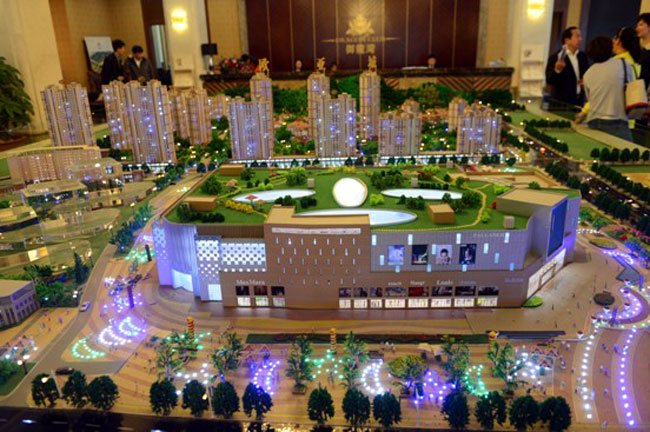
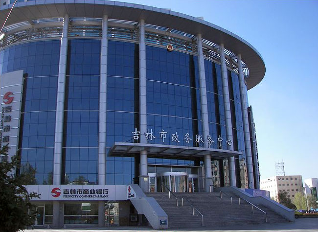
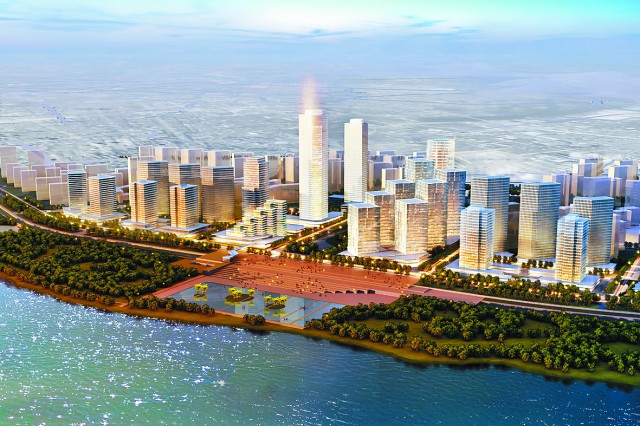

吉林市建电商产业园壮大电商平台
来源：东亚经贸新闻-吉和网 作者：陈杉 时间：2016-04-14 06:24:54
1. 服务业增加值占比将达50%
2. 实现一加一大于二的集聚效应
3. 大力拓展B2C、O2O等消费渠道

吉林市哈达湾老工业区搬迁改造有序推进
新华网吉林频道５月５日电（记者褚晓亮、孙阳）吉林市哈达湾老工业区搬迁改造目前正有序推进中 ，除两家工业企业已完成搬迁投产外，哈达湾腾空区现代服务业建设规划也正在进行中。

老工业城市换发新青春——吉林市全力打造现代服务业
新华网吉林频道５月６日电（记者褚晓亮、孙阳）吉林市是全国著名的老工业城市， 以吉林石化等一批企业为代表的重工业曾是城市主导发展力量。近年来吉林市积极调整产业结构，加快构建现代产业体系 ，以信息、互联网、服务外包、物流、商贸为主的现代服务业逐渐发展成为一股新势力。

吉林市崛起南部新城
新华网吉林频道5月5日电（记者褚晓亮、孙阳）吉林市南部新城位于城市南部上风上水方向， 为吉林市的南部出入口，是去往吉林南部地区永吉县城、桦甸市、磐石市以及松花湖风景区 、青山滑雪场、北大壶滑雪场等多处著名景区的必经之地。